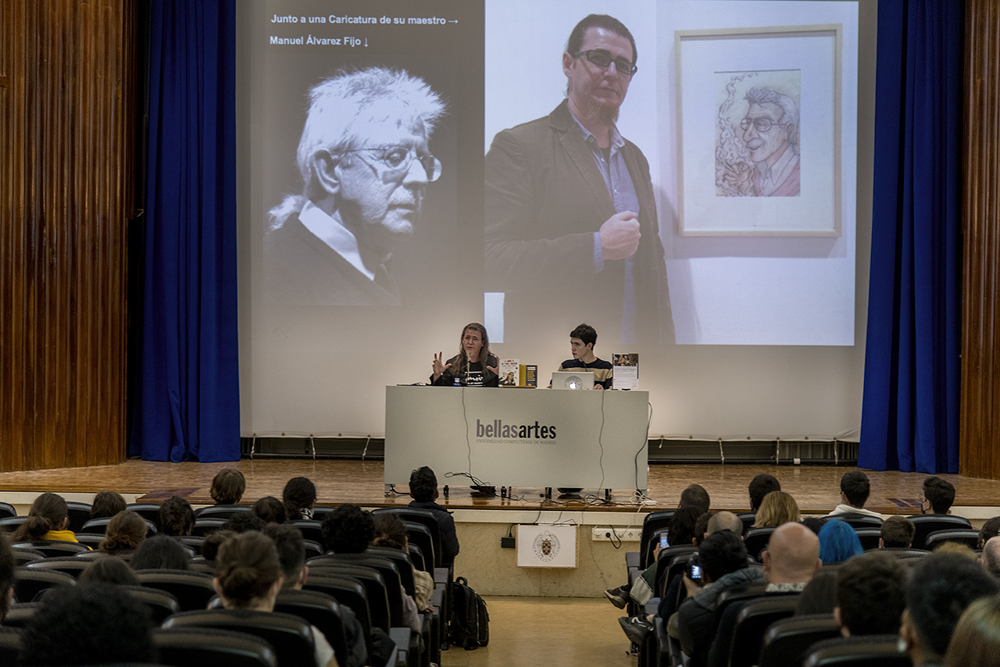

Tras culminar sus estudios, Villarán dedicó parte de su carrera a la enseñanza, impartiendo clases de dibujo, pintura y escultura en diversas instituciones prestigiosas, incluyendo la Facultad de Bellas Artes de Sevilla y la Universidad Internacional de Andalucía. En estas aulas, guió a generaciones de estudiantes, combinando la transmisión de técnicas tradicionales con su enfoque crítico sobre las prácticas contemporáneas.
Además, desarrolló su labor docente en contextos menos convencionales, como talleres de verano, programas educativos comunitarios y cursos de extensión, contribuyendo a que el arte fuera accesible más allá del entorno universitario. Esta versatilidad docente refleja su compromiso no solo con la técnica, sino con la democratización del conocimiento artístico.
